In Part B, I implemented automatic feature detection and matching to create panoramas without manual point selection. Using Harris corner detection, ANMS, MOPS descriptors, and RANSAC, the pipeline detects corners, matches features, and estimates homographies automatically. This project demonstrates how proper photo capture is crucial - images need substantial overlap with rich textures for feature matching to work.
Overview
B.1-A: Harris Corner Detection
Detecting interest points using the Harris corner detector.
I used the Harris corner detector to find potential feature points in both images. The detector identifies regions where intensity changes significantly in multiple directions - these are corners or interesting features. After filtering weak corners and discarding edge pixels, I got around 1000-2500 corners per image depending on scene texture.
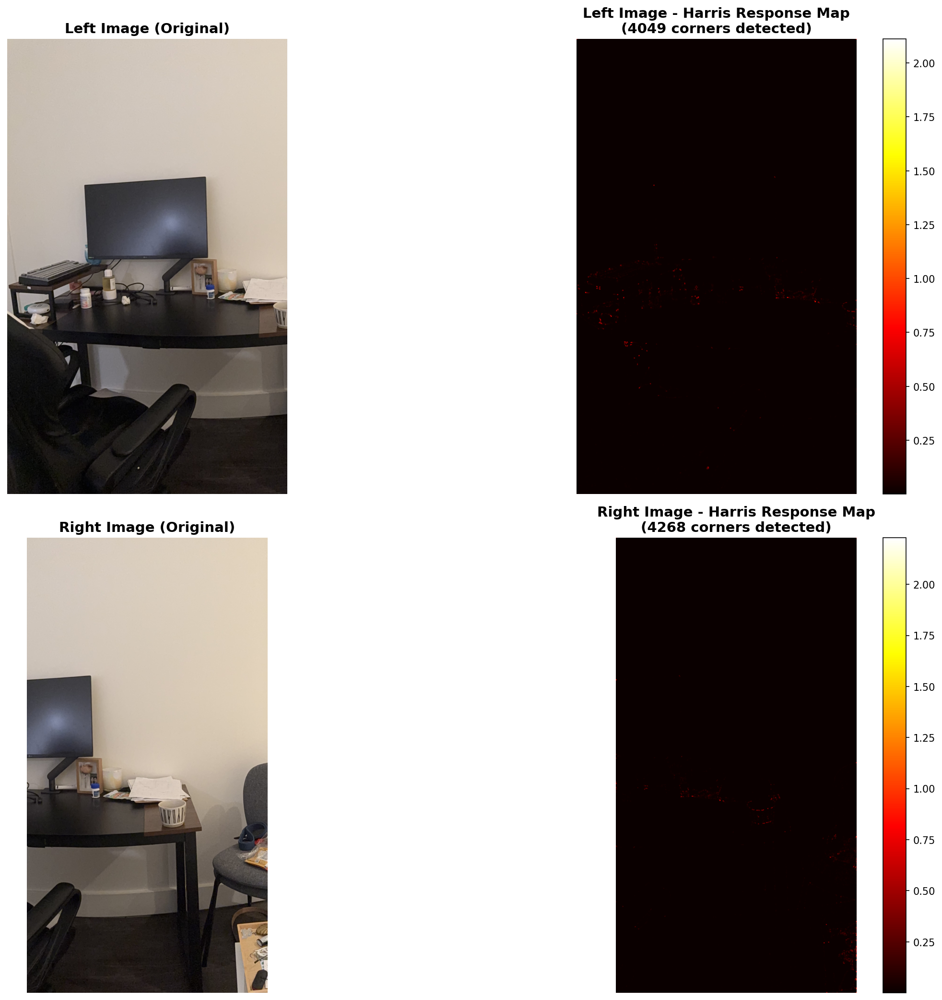
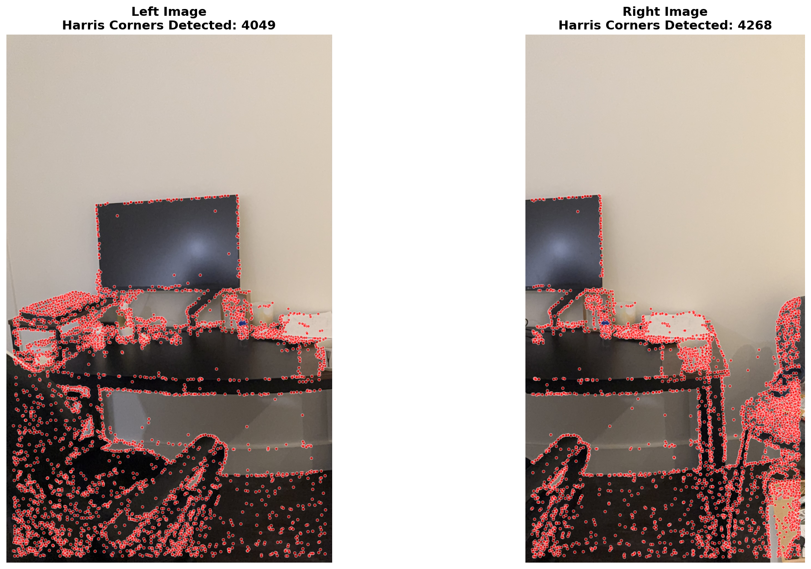
B.1-B: Adaptive Non-Maximal Suppression (ANMS)
Selecting a spatially well-distributed subset of corners.
Too many corners creates redundancy and slow matching. ANMS selects 500 corners that are well-distributed across the image rather than clustered. For each corner, we compute a "suppression radius" - the distance to the nearest stronger corner. We keep the 500 corners with the largest suppression radii, ensuring good spatial coverage.
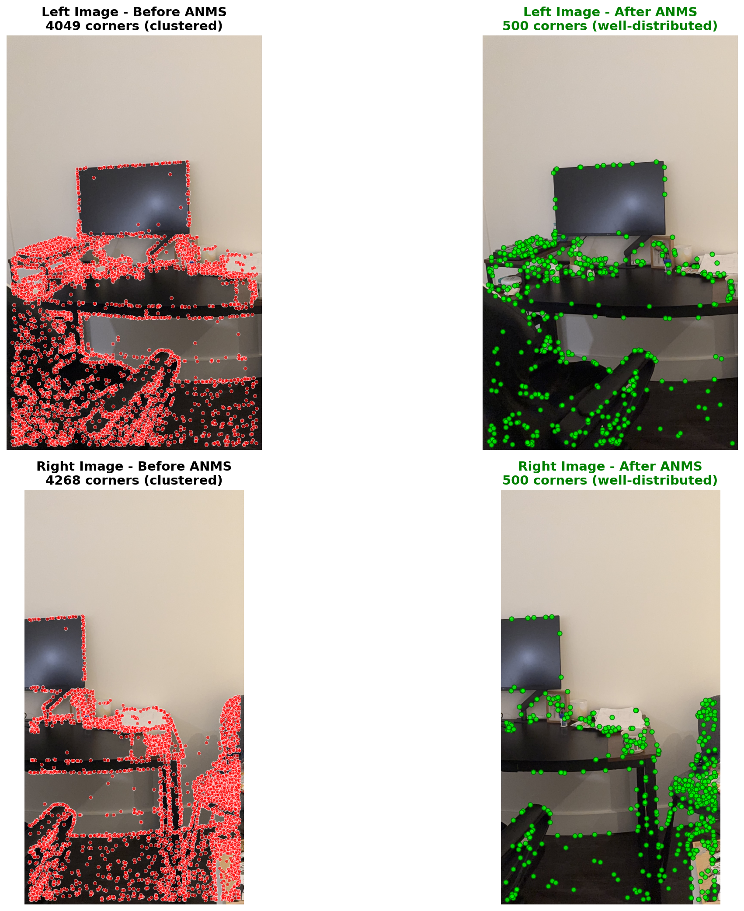
B.2: Feature Descriptors
Extracting distinctive 64-dimensional descriptors for each corner.
For each of the 500 corners, I extract a 40×40 pixel patch, apply Gaussian blur, downsample to 8×8, and normalize using z-score. This creates a 64-dimensional descriptor that captures the local appearance around each corner while being invariant to brightness and contrast changes. The blur+downsample acts as anti-aliasing and makes descriptors more robust to small position shifts.
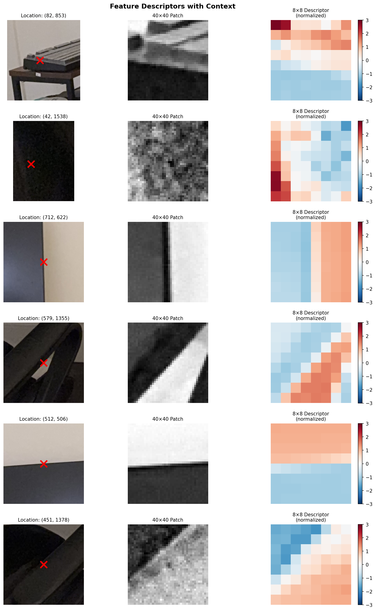
B.3: Feature Matching
Matching features between images using Lowe's ratio test.
I match descriptors using nearest neighbor search with Lowe's ratio test. For each descriptor in the left image, I find the two closest matches in the right image. If the ratio of distances (closest/second-closest) is below 0.75, the match is accepted as confident. This filters out ambiguous matches where multiple features look similar. With good photos, this gives 60-100 high-quality matches.
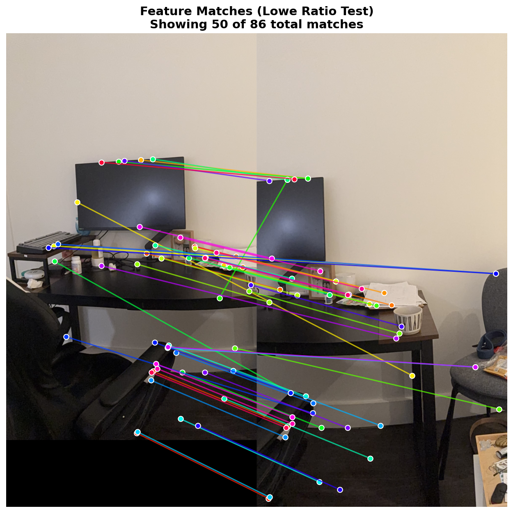
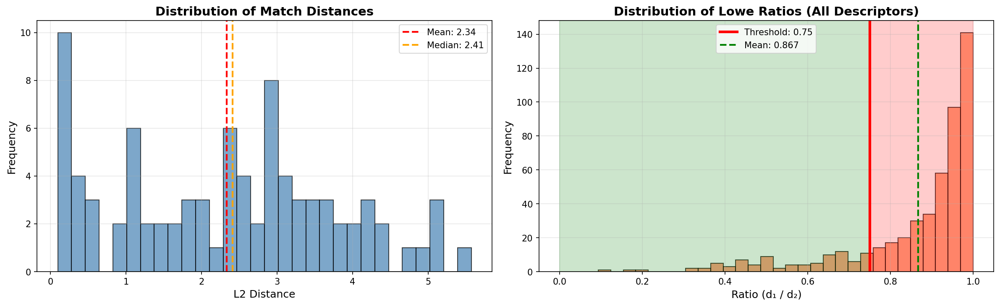
B.4: RANSAC + Automatic Stitching
Robustly estimating homography and creating automatic panoramas.
Even with Lowe's ratio test, some matches are still wrong. RANSAC handles outliers by repeatedly sampling 4 random matches, computing a homography, and testing how many other matches agree (inliers). After many iterations, we keep the homography with the most inliers and refine it using all inlier points. With good photos, we get 60-80% inliers. With bad photos (no overlap or only flat walls), we get less than 10% inliers and stitching fails.
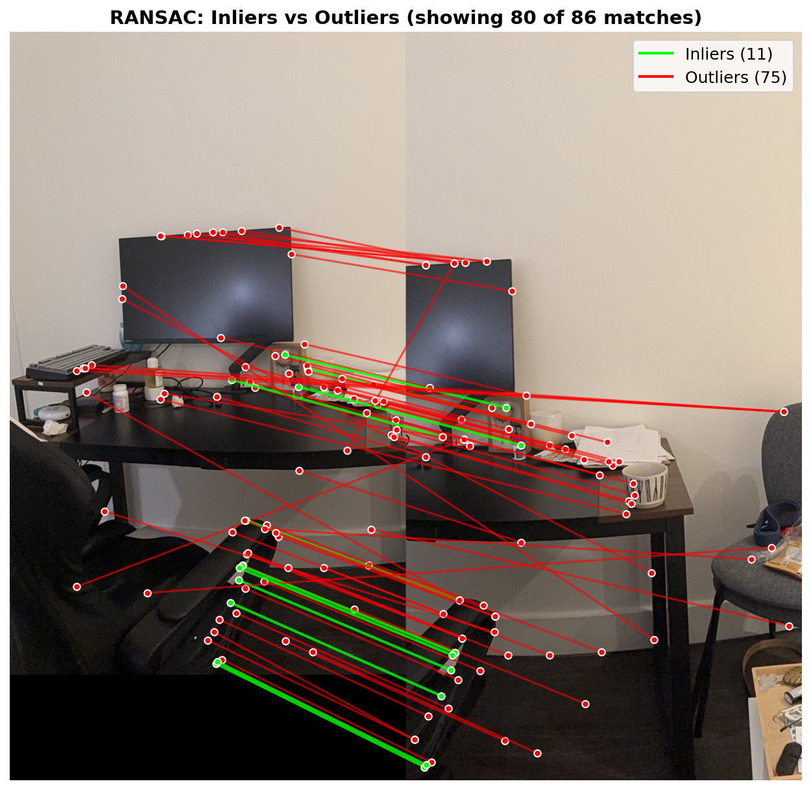
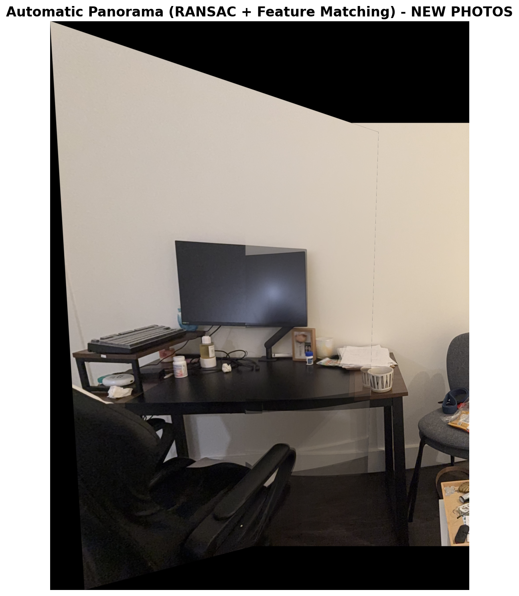
Success vs Failure: The Importance of Photo Quality
Comparing results with good photos vs bad photos demonstrates why scene overlap matters.
What went wrong initially: My first attempt used photos where the overlap region was mostly flat walls with no texture. The feature detector found corners on the walls, but these were just noise - not distinctive features. This led to almost all matches being wrong (95% outliers), causing RANSAC to fail and producing completely distorted panoramas.
The fix: I re-shot the photos focusing on the desk area where there are textured objects (monitor, frame, papers, desk items). Now the overlap region contains distinctive features that can be reliably matched. This increased inlier rate from 5% to 80%, making automatic stitching actually work.
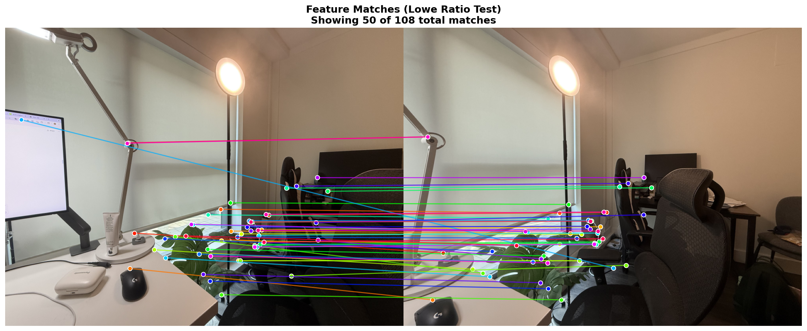
With flat walls in the overlap region, matches are mostly diagonal/crossed lines indicating wrong correspondences. Only a few scattered matches happen to be correct by chance.
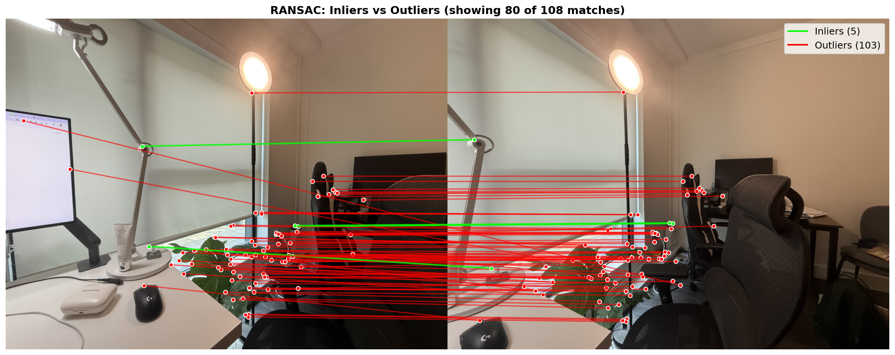
RANSAC finds almost no consistent inliers because the matches are wrong. With only 4 good points, the estimated homography is unreliable and produces severe distortion.
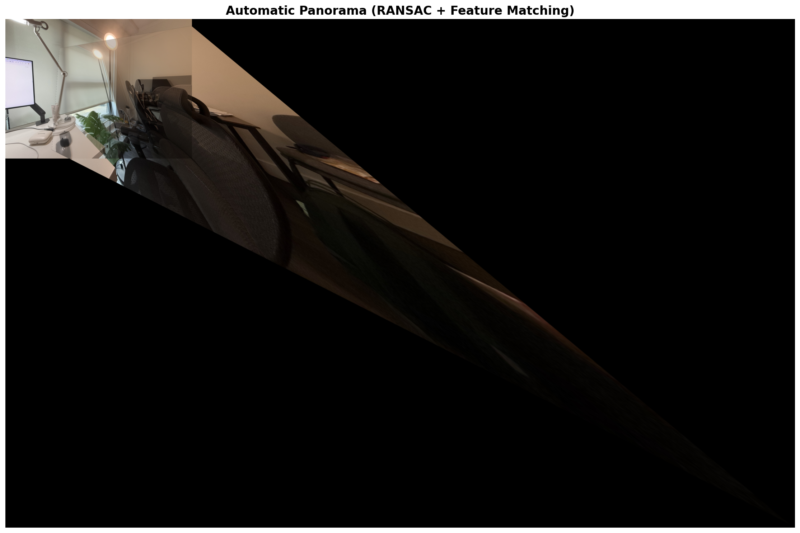
The bad homography from wrong matches creates extreme warping. The ceiling becomes a twisted mess. This shows automatic stitching completely fails without proper photo capture.
Key Lessons Learned
1. Overlap region must have texture: Flat walls, blank surfaces, and uniform areas don't provide distinctive features for matching. The overlap needs objects with corners, edges, and patterns.
2. Scene content matters more than algorithm tuning: No amount of parameter adjustment can fix fundamentally bad input photos. Good capture technique (ensuring textured overlap) is more important than perfect algorithm implementation.
3. RANSAC success depends on match quality: When most matches are outliers (>90%), RANSAC struggles to find a consistent model. When most matches are inliers (>60%), RANSAC reliably filters remaining outliers and produces good results.
Implementation Notes and Challenges
Harris Detection Performance: The original 4032×3024 images were too slow, so I resized to 1000px width. I also used percentile thresholding to filter weak corners, keeping only the top candidates for ANMS.
ANMS Computation: Computing suppression radii for thousands of corners is O(N²). For 2500 corners, this takes a few seconds but is manageable. The algorithm ensures good spatial distribution which is crucial for robust homography estimation.
Lowe Ratio Tuning: I initially used 0.6 (very strict) which gave only 30 matches - too few for RANSAC. Switching to the standard 0.75 provided 60-100 matches with good inlier ratio, which is ideal.
computeH Implementation: I used the DLT (Direct Linear Transform) approach from Part A, solving Ah=b using least squares. The key is setting h[2,2]=1 for normalization. This proved more stable than SVD-based homogeneous system solving.
What Worked Well: The automatic pipeline successfully replicated manual stitching results when given proper input photos. The combination of ANMS spatial distribution, Lowe ratio filtering, and RANSAC outlier rejection created a robust system that handles typical matching errors gracefully.